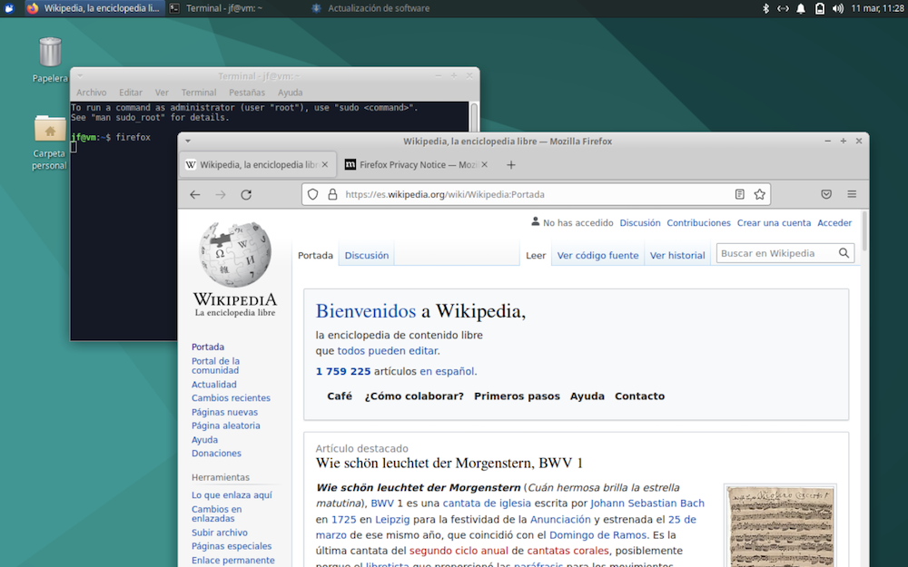

Terminal de comandos¶
Para completar el proceso de instalación de Linux quizás necesitemos ejecutar un par de comandos del sistema operativo. Veamos una rápida introducción al terminal, un programa que emula las antiguas consolas de texto, cuando no había escritorios gráficos ni ratones.
Iniciando el terminal¶
El terminal de comandos suele estar presente en todas las distribuciones Linux. Cada una tiene su propio programa, pero básicamente todos funcionan de forma similar. Como regla general, bastará con buscarlo en la lista de aplicaciones de nuestro escritorio. En el caso de Xfce lo encontraremos en el apartado Accesorios > Emulador de Terminal:
Al abrirlo veremos la ventana del Terminal:
El prompt¶
Algunos terminales muestran algún mensaje de bienvenida o informativo. Seguidamente vemos una línea de texto que muestra cierta información seguida de un símbolo $. Suele ser algo así como
usuario@maquina:carpeta $
A esto se le llama el prompt, y tras el último carácter $, se nos invita a teclear algún comando.
En nuestro ejemplo, la carpeta está representada por el carácter ~ antes del prompt $. Como veremos, ~ es un alias que representa la carpeta principal del usuario.
Introduciendo un comando¶
Vamos a probar a ejecutar algo. Tecleamos la palabra date y seguidamente la tecla Enter. Se muestra la fecha y hora del sistema:
$ date
dom 13 mar 2022 15:34:15 CET
Nótese que el carácter $ que aparece al principio del ejemplo es el prompt, y no es algo que tengamos que teclear. Tras completar la ejecución del comando, se recupera el prompt, que nos invita a introducir más comandos.
Errores¶
Si tecleamos mal un comando, se mostrará un mensaje de error:
$ gkghj
gkghj: orden no encontrada
UNIX distingue entre mayúsculas y minúsculas. Un comando, un nombre de archivo, de directorio o cualquier otra cosa donde no respetemos el uso de las letras, no será reconocido y lo más probable es que obtengamos un mensaje de error. Por ejemplo, si escribimos el comando date con la primera letra en mayúsculas, obtenemos:
$ Date
Date: orden no encontrada
Algunos sistemas son suficientemente inteligentes como para sugerirnos opciones:
$ Date
Orden «Date» no encontrada. Quizá quiso decir:
la orden «kate» del paquete snap «kate (21.12.1)»
la orden «gate» del paquete snap «gate (9.1)»
la orden «kate» del paquete deb «kate (4:21.04.2-0ubuntu1)»
la orden «late» del paquete deb «late (0.1.0-14)»
la orden «date» del paquete deb «coreutils (8.32-4ubuntu2)»
Consulte «snap info <nombre del snap>» para ver más versiones.
Comandos no instalados¶
Muchos comandos son en realidad pequeños programas. Por ejemplo, cal es un comando que muestra el calendario del mes:
$ cal
Abril 2021
do lu ma mi ju vi sá
1 2 3
4 5 6 7 8 9 10
11 12 13 14 15 16 17
18 19 20 21 22 23 24
25 26 27 28 29 30
Es posible que en lugar de visualizar el calendario obtengamos un mensaje de error. El comando cal es un antiguo programa que en algunas versiones modernas de Linux no viene instalado de serie.
Como veremos más adelante, hay varias formas de instalar software. Ubuntu proporciona un enorme repositorio de paquetes de software al que podemos acudir. El comando cal forma parte de un paquete llamado ncal.
Tras asegurarnos de tener conexión a Internet, vamos a instalar ncal usando un comando de acceso al repositorio:
$ sudo apt-get install ncal
Al pulsar Enter se nos pedirá la contraseña de usuario para completar el proceso. Tras introducirla, pulsar Enter de nuevo.
Recuérdese que hay que respetar mayúsculas y minúsculas. El texto del comando significa:
-
la palabra
sudoes la abreviatura de super user do. Significa que lo que viene a continuación es un comando especial que requiere permisos de administrador. Por ese motivo, se nos pide la contraseña. -
apt-getes el comando para instalar nuevo software. Es un pequeño programa cuyo nombre es la abreviatura de Advanced Packaging Tool. -
installes la operación a realizar. El comandoapt-gettiene más opciones. Por ejemplo, la operación contraria ainstallesremove. -
finalmente se escribe el nombre del paquete a descargar e instalar, en este caso,
ncal.
Una vez completada la instalación, tenemos dos nuevos comandos, cal y ncal. Lo probamos introduciendo el comando:
$ ncal
El funcionamiento de ncal difiere ligeramente del de cal. Las semanas se muestran en columnas:
$ ncal
Abril 2021
lu 5 12 19 26
ma 6 13 20 27
mi 7 14 21 28
ju 1 8 15 22 29
vi 2 9 16 23 30
sá 3 10 17 24
do 4 11 18 25
Argumentos¶
Ya hemos visto que tras el comando apt-get añadimos más información. Todo comando puede ir acompañado de argumentos, que es lo que le pasamos para que pueda realizar su tarea. Por ejemplo, para ver un mes distinto del actual, al comando ncal le añadimos el mes y año deseado:
$ ncal 6 2021
Junio 2021
lu 7 14 21 28
ma 1 8 15 22 29
mi 2 9 16 23 30
ju 3 10 17 24
vi 4 11 18 25
sá 5 12 19 26
do 6 13 20 27
Véase que los argumentos se identifican gracias a que van separados uno de otro con espacios en blanco.
Opciones¶
Existen argumentos que permiten cambiar el comportamiento de un comando. Se llaman “opciones”, y suelen consistir en un guión y una letra. Por ejemplo, la opción -C (en mayúsculas) del comando ncal muestra la información en el mismo formato que cal:
$ ncal -C 6 2021
Junio 2021
do lu ma mi ju vi sá
1 2 3 4 5
6 7 8 9 10 11 12
13 14 15 16 17 18 19
20 21 22 23 24 25 26
27 28 29 30
Nótese que las opciones del comando se pasan como un argumento más.
Borrar pantalla¶
El funcionamiento del terminal es mediante flujo de caracteres. A medida que se va llenando la ventana, el texto se irá desplazando hacia arriba para dejar espacio. Los programas de Terminal suelen proporcionar una barra lateral de desplazamiento que podemos arrastrar para visualizar el texto que ha quedado oculto.
Si el terminal se llena de texto y queremos hacer “limpieza” de la ventana, podemos ejecutar el comando clear
Cerrar sesión interactiva¶
Para cerrar el terminal, introducir el comando exit
Uso del ratón¶
Las antiguas consolas de texto funcionaban solo con el teclado. Las emulaciones de terminal contemplan el uso del ratón para poder seleccionar texto y realizar operaciones de cortar y pegar, pero no podemos utilizarlo para mover el cursor. Para desplazarnos en la edición de un comando tenemos que utilizar las teclas Left y Right.
Historial de comandos¶
Siempre que ejecutamos un comando, el Terminal lo recuerda y mantiene un registro de los últimos comandos introducidos. Pulsando Up y Down, podemos recuperar comandos ejecutados, navegando hacia arriba y hacia abajo en la lista, siendo el punto de partida el comando más reciente. Una vez que recuperemos el comando deseado, podemos editarlo y ejecutarlo de nuevo. Pulsar las teclas Left y Right para desplazarnos por el texto, modificándolo a nuestro gusto antes de ejecutarlo al pulsar Enter.
El directorio de trabajo¶
Supongamos que estamos visualizando el contenido de una carpeta en la ventana del gestor de archivos, por ejemplo, las imágenes de fondo de escritorio que se suministran con Xubuntu. Están en /usr/share/backgrounds/xfce:
Mientras navegamos usando el gestor de archivos, en todo momento hay una carpeta “actual” cuyo contenido se muestra. Para ir a otra carpeta, tendremos que abrirla pulsando sobre ella.
En el Terminal pasa lo mismo. En todo momento hay una carpeta de trabajo, conocida como working directory. Cuando abrimos una sesión de Terminal, el directorio comenzará siendo la carpeta principal del usuario, ubicada generalmente en el directorio /home/usuario (cambiar “usuario” por el nombre que corresponda). A esta carpeta también podemos hacer referencia por su alias, formado por un único carácter ~.
Podemos ver cual es la carpeta actual en la información que se muestra en el prompt, antes del carácter $
~ $
Otra forma de obtener esto es ejecutando el comando pwd (print working directory):
$ pwd
/home/luis
Un detalle histórico:
En el mundo de los ordenadores, para mostrar algo en la pantalla se usa con frecuencia la palabra print, que significa imprimir. Es una herencia de los tiemps prehistóricos, cuando no había pantallas y todos los datos se mostraban en papel.
Ver el contenido de un directorio¶
Para mostrar una lista de los archivos que hay en un directorio, utilizar el comando ls (abreviatura de lista)
seguido del directorio a mostrar:
$ ls /usr/share/backgrounds/xfce
con lo que veremos la lista de archvos:
xfce-blue.jpg xfce-stripes.png xfce-teal.jpg xfce-verticals.png
Si queremos mostrar el contenido de la carpeta actual, introducir el comando ls sin especificar ningún directorio:
$ ls
Podemos mejorar la presentación mostrando los archivos en forma de una sola columna, añadiendo la opción -1 como argumento. ¡Ojo! Es un número uno, no la letra ele.
$ ls -1
O bien, para obtener un directorio concreto en lugar del actual:
$ ls -1 /usr/share/backgrounds/xfce
Si queremos una lista detallada, usar la opción -l (letra ele minúscula).
$ ls -l
total 836
-rw-r--r-- 1 root root 197011 dic 23 2020 xfce-blue.jpg
-rw-r--r-- 1 root root 48970 dic 23 2020 xfce-stripes.png
-rw-r--r-- 1 root root 312080 dic 23 2020 xfce-teal.jpg
-rw-r--r-- 1 root root 289725 dic 23 2020 xfce-verticals.png
Cada entrada de la lista es un archivo. Veamos el significado de las columnas.
-
el primer carácter
-indica que se trata de un archivo. Un directorio mostraría unad, y un enlace a otro fichero mostraría unal(abreviatura de “link”) -
los tres siguientes caracteres
rw-indican los permisos que tiene el usuario “propietario” de ese archivo. Puede serrwx, que significa read, write, execute. Cuando un permiso está desactivado, se muestra un guión. Evidentemente, tratándose de un archivo.jpg, el permiso para ejecutarlo está desactivado, ya que no es un programa. -
los tres siguientes caracteres muestran los permisos para los usuarios que pertenezcan al grupo propietario. Todo archivo tiene un usuario y un grupo al que pertenece. En este caso, los usuarios del grupo que no sean el usuario propietario no tienen permiso write. Es decir, no pueden modificar ni borrar el archivo.
-
los tres siguientes caracteres muestran los permisos para el resto de usuarios.
-
la siguiente columna muestra el número de enlaces al fichero.
-
seguidamente se muestran los nombres de usuario y grupo propietario. En el ejemplo vemos que solo podemos modificar o borrar el fichero si actuamos como usuario administrador del sistema (root).
-
en la siguiente columna vemos el tamaño del archivo
-
fecha de la última modificación
-
nombre del archivo
Una opción interesante del comando ls es -F (en mayúsculas), que muestra un carácter añadido a los nombres de carpetas y archivos, indicando el tipo. Por ejemplo, las carpetas se señalan con un carácter /, y los programas ejecutables llevan un asterisco *.
$ ls ~ -lF
total 32
drwxr-xr-x 2 jf jf 4096 mar 11 12:05 Descargas/
drwxr-xr-x 2 jf jf 4096 mar 11 12:05 Documentos/
drwxr-xr-x 2 jf jf 4096 mar 11 12:05 Escritorio/
drwxr-xr-x 2 jf jf 4096 mar 11 12:05 Imágenes/
drwxr-xr-x 2 jf jf 4096 mar 11 12:05 Música/
drwxr-xr-x 2 jf jf 4096 mar 11 12:05 Plantillas/
drwxr-xr-x 2 jf jf 4096 mar 11 12:05 Público/
drwxr-xr-x 2 jf jf 4096 mar 11 12:05 Vídeos/
Véase que cuando combinamos varias opciones que estén limitadas a una letra y un guión, podemos escribirlas combinándolas en una sola, como -lF. A mí me gusta añadir también la opción -a, que muestra los archivos ocultos y las entradas correspondientes a la carpeta actual y la padre. Los archivos ocultos se distinguen porque el nombre lleva un punto como prefijo:
$ ls ~ -alF
total 104
drwxr-x--- 14 jf jf 4096 mar 11 12:14 ./
drwxr-xr-x 3 root root 4096 mar 11 11:57 ../
-rw------- 1 jf jf 19 mar 11 12:14 .bash_history
-rw-r--r-- 1 jf jf 220 mar 11 11:57 .bash_logout
-rw-r--r-- 1 jf jf 3771 mar 11 11:57 .bashrc
drwxrwxr-x 7 jf jf 4096 mar 11 12:05 .cache/
drwxr-xr-x 12 jf jf 4096 mar 11 12:13 .config/
drwxr-xr-x 2 jf jf 4096 mar 11 12:05 Descargas/
drwxr-xr-x 2 jf jf 4096 mar 11 12:05 Documentos/
drwxr-xr-x 2 jf jf 4096 mar 11 12:05 Escritorio/
drwx------ 3 jf jf 4096 mar 11 12:05 .gnupg/
-rw------- 1 jf jf 0 mar 11 12:05 .ICEauthority
drwxr-xr-x 2 jf jf 4096 mar 11 12:05 Imágenes/
drwxrwxr-x 3 jf jf 4096 mar 11 12:05 .local/
drwxr-xr-x 2 jf jf 4096 mar 11 12:05 Música/
drwxr-xr-x 2 jf jf 4096 mar 11 12:05 Plantillas/
-rw-r--r-- 1 jf jf 807 mar 11 11:57 .profile
drwxr-xr-x 2 jf jf 4096 mar 11 12:05 Público/
-rw-r--r-- 1 jf jf 0 mar 11 12:13 .sudo_as_admin_successful
drwxr-xr-x 2 jf jf 4096 mar 11 12:05 Vídeos/
-rw------- 1 jf jf 47 mar 11 12:11 .Xauthority
-rw-r--r-- 1 jf jf 1600 mar 11 11:57 .Xdefaults
-rw-r--r-- 1 jf jf 14 mar 11 11:57 .xscreensaver
-rw------- 1 jf jf 6972 mar 11 12:12 .xsession-errors
-rw------- 1 jf jf 8881 mar 11 12:11 .xsession-errors.old
Mostrar determinados archivos¶
Si no queremos ver el directorio completo, podemos especificar el nombre del archivo buscado, o usar comodines:
ls -alF /home/luis/doc*
este ejemplo muestra las entradas que hay en esa carpeta, cuyo nombre empiece por doc.
Cambiar de directorio¶
En comandos como ls, si no especificamos el directorio se utiliza la carpeta actual. Ya hemos visto que podemos saber cual es la carpeta de trabajo usando el comando pwd. Para establecer otra carpeta como tal, debemos usar el comando cd (change directory) seguido del directorio al que queremos cambiar. Por ejemplo:
cd /home/luis/documentos
La ruta de carpetas indicada puede ser absoluta o relativa.
Una ruta absoluta es aquella que comienza con el carácter / (que representa el directorio raiz). Por ejemplo, los programas del sistema suelen estar en /usr/bin.
$ cd /usr/bin
$ pwd
/usr/bin
Una ruta relativa puede ser de cuatro tipos:
-
Si comienza por
./carpetahace referencia a una carpeta que cuelga de la actual, representada por el punto. -
Si comienza por
../carpetahace referencia a una carpeta que cuelga de la carpeta padre de la actual. La carpeta padre se representa con dos puntos. -
Si comienza por
~/carpetahace referencia a una carpeta que cuelga de la carpeta raíz del usuario. Por ejemplo, si el usuario esluis, la carpeta/home/luis/carpetase puede escribir como~/carpeta -
Si la ruta comienza directamente con un nombre de carpeta, es que se trata de una que cuelga de la actual. Por ejemplo,
carpeta1/carpeta2equivale a./carpeta1/carpeta2.
Nótese que podemos ir a una carpeta con varios comandos cd, paso a paso:
$ cd ~
$ cd carpeta1
$ cd carpeta2
$ pwd
/home/luis/carpeta1/carpeta2
El primer comando nos deja en la carpeta raíz del usuario. El resto van descendiendo por la estructura de carpetas del usuario.
Para subir a la carpeta de la que cuelga la actual escribimos:
$ pwd
/home/luis/carpeta1/carpeta2
$ cd ..
$ pwd
/home/luis/carpeta1
No debemos olvidar que Linux es case sensitive. Una carpeta llamada /Documentos u otra /documentos son distintas, ya que el primer carácter difiere.
También hay que tener presente que un nombre de carpeta o archivo puede llevar espacios, que actúan como separadores para identificar cada argumento del comando. Para evitarlo, podemos delimitar el texto de cada argumento entre comillas o entre apóstrofos:
cd "/mis documentos"
De esta forma logramos que el espacio forme parte del texto del argumento.
Abrir carpeta en Terminal¶
Desde el explorador de archivos Thunar, podemos navegar hasta la carpeta deseada, y pulsar en el menú Archivo>Abrir terminal, lo que abrirá una sesión de Terminal con ese directorio ya seleccionado, y nos ahorra sucesivos comandos cd.
Ejecutar aplicaciones gráficas¶
Para ejecutar una aplicación desde el terminal de comandos, en principio basta con conocer su nombre y teclearlo. Por ejemplo, para abrir el navegador web Mozilla Firefox escribimos:
$ firefox
Al ejecutarse el programa, se abre en una nueva ventana. que convivirá con la del Terminal:

Nótese que hasta que no finalice el programa, no recuperaremos el prompt en la ventana de terminal, y no podremos ejecutar nuevos comandos. Podemos evitar esto añadiendo un carácter & al comando:
$ firefox &
Esto hace que la ejecución sea “en segundo plano”, recuperando el prompt inmediatamente.
Para que cualquier programa (gráfico o de texto) se ejecute desde la línea de comandos, es necesario que esté ubicado en alguna de las carpetas estándar para alojar programas. Esta lista de carpetas está reflejada en la variable del sistema PATH.
Las variables del sistema son etiquetas asociadas a los valores de configuración del equipo. Podemos ver esos valores con el comando printenv. Por ejemplo:
$ printenv PATH
muestra algo así como:
/usr/local/sbin:/usr/local/bin:/usr/sbin:/usr/bin:/sbin:/bin
Nota: una vez más, linux es case-sensitive. Una variable PATH y otra path son diferentes.
El valor de esta variable muestra las carpetas donde por defecto se buscarán los programas. Los elementos de la lista se separan entre ellos con dos puntos. En este ejemplo, los programas se buscarán, y por ese orden, en:
/usr/local/sbin
/usr/local/bin
/usr/sbin
/usr/bin
/sbin
/bin
¡Importante! Véase que solo podemos ejecutar programas ubicados en estas carpetas, a menos que los escribamos precedidos por el nombre de carpeta:
$ ./miPrograma
Aquí estamos ejecutando un programa ubicado en la carpeta actual, representada por un punto “.”
Detener un comando¶
Si ejecutamos un comando y el prompt se queda a la espera de que finalice, generalmente podemos abortar la ejecución con la pulsación de las teclas Ctrl+C, siempre que la ventana de Terminal sea la activa y tenga el foco del teclado.
Permisos de administrador¶
Ya vimos, en el caso del comando apt-get, que para ejecutar algunos comandos necesitamos permisos de administrador. En sistemas tipo UNIX, a los usuarios “de a pie” no se les permite realizar operaciones de configuración del sistema, instalación de nuevas aplicaciones, etcétera. Generalmente hay un usuario con permisos especiales denominado “root”, o superusuario.
En algunos sistemas, para conectarnos como superusuario tenemos que introducir el comando su (abreviatura de superuser):
$ su
Se nos pide la password, y seguidamente el prompt cambia, para advertirnos que estamos en modo administrador:
#
Debemos evitar el abuso de esta situación, ya que, aunque nos da más libertad, supone un peligro para el sistema. Podemos salir de la sesión de superusuario con el comando exit:
# exit
$
Véase que se recupera el prompt $ indicando que estamos trabajando con permisos normales. Para cerrar la sesión de Terminal, volver a introducir el comando exit nuevamente. Cada comando exit cierra solo la sesión en curso.
Algunas distribuciones linux no tienen habilitada la cuenta de superusuario. En este caso, para realizar tareas administrativas, debemos escribir todos los comandos precedidos por la palabra sudo (abreviatura de superuser do). Se nos pedirá la password de nuestro usuario.
Por ejemplo, si escribimos:
$ ls /root
ls: no se puede abrir el directorio '/root': Permiso denegado
es decir, no tenemos permiso para visualizar el contenido de la carpeta del administrador. Pero si escribimos:
$ sudo ls /root
[sudo] contraseña para luis:
se nos pide nuestra contraseña de usuario y seguidamente se ejecuta el comando.
Si conocemos el nombre del explorador de archivos, que en el caso de Xubuntu es thunar, podemos abrirlo con privilegios de administrador mediante el comando:
$ sudo thunar
Esto nos da acceso a realizar operaciones que normalmente están restringidas, como por ejemplo, borrar archivos importantes para el sistema. Véase que se muestra un mensaje de advertencia:
Está utilizando la cuenta del superusuario. Puede dañar el sistema.